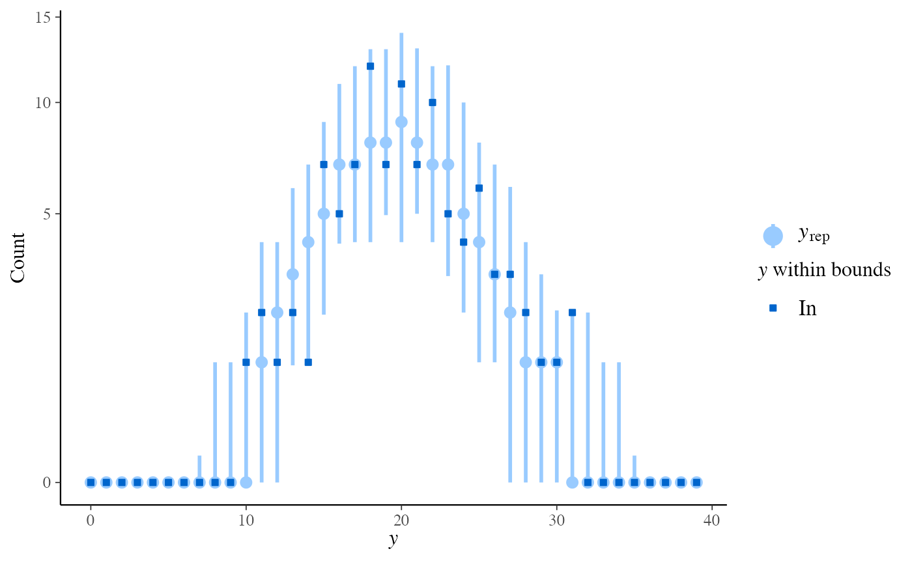
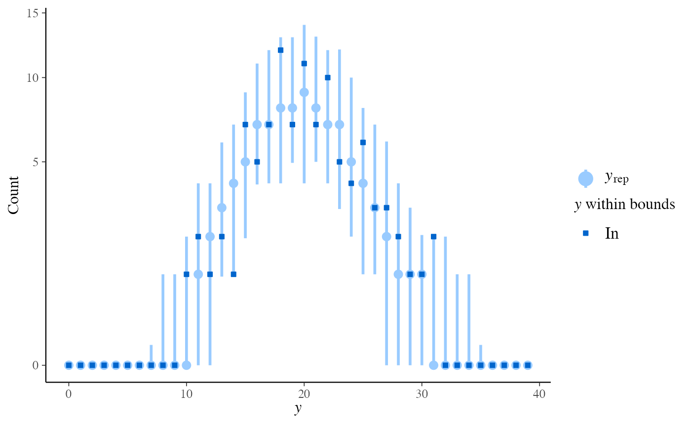

Many of the PPC functions in bayesplot can
be used with discrete data. The small subset of these functions that can
only be used if y and yrep are discrete are documented
on this page. Currently these include rootograms for count outcomes and bar
plots for ordinal, categorical, and multinomial outcomes. See the
Plot Descriptions section below.
Usage
ppc_bars(
y,
yrep,
...,
prob = 0.9,
width = 0.9,
size = 1,
fatten = 2.5,
linewidth = 1,
freq = TRUE
)
ppc_bars_grouped(
y,
yrep,
group,
...,
facet_args = list(),
prob = 0.9,
width = 0.9,
size = 1,
fatten = 2.5,
linewidth = 1,
freq = TRUE
)
ppc_rootogram(
y,
yrep,
style = c("standing", "hanging", "suspended", "discrete"),
...,
prob = 0.9,
size = 1,
bound_distinct = TRUE
)
ppc_bars_data(y, yrep, group = NULL, prob = 0.9, freq = TRUE)Arguments
- y
A vector of observations. See Details.
- yrep
An
SbyNmatrix of draws from the posterior (or prior) predictive distribution. The number of rows,S, is the size of the posterior (or prior) sample used to generateyrep. The number of columns,Nis the number of predicted observations (length(y)). The columns ofyrepshould be in the same order as the data points inyfor the plots to make sense. See the Details and Plot Descriptions sections for additional advice specific to particular plots.- ...
Currently unused.
- prob
A value between
0and1indicating the desired probability mass to include in theyrepintervals. Setprob=0to remove the intervals. (Note: for rootograms these are intervals of the square roots of the expected counts.)- width
For bar plots only, passed to
ggplot2::geom_bar()to control the bar width.- size, fatten, linewidth
For bar plots,
size,fatten, andlinewidthare passed toggplot2::geom_pointrange()to control the appearance of theyreppoints and intervals. For rootogramssizeis passed toggplot2::geom_line()andggplot2::geom_pointrange().- freq
For bar plots only, if
TRUE(the default) the y-axis will display counts. Settingfreq=FALSEwill put proportions on the y-axis.- group
A grouping variable of the same length as
y. Will be coerced to factor if not already a factor. Each value ingroupis interpreted as the group level pertaining to the corresponding observation.- facet_args
An optional list of arguments (other than
facets) passed toggplot2::facet_wrap()to control faceting.- style
For
ppc_rootogram, a string specifying the rootogram style. The options are"discrete","standing","hanging", and"suspended". See the Plot Descriptions section, below, for details on the different styles.- bound_distinct
For
ppc_rootogram(style = "discrete), ifTRUEthen the observed counts will be plotted with different shapes depending on whether they are within the bounds of theyquantiles.
Value
The plotting functions return a ggplot object that can be further
customized using the ggplot2 package. The functions with suffix
_data() return the data that would have been drawn by the plotting
function.
Details
For all of these plots y and yrep must be integers, although
they need not be integers in the strict sense of R's
integer type. For rootogram plots y and yrep must also
be non-negative.
Plot Descriptions
ppc_bars()Bar plot of
ywithyrepmedians and uncertainty intervals superimposed on the bars.ppc_bars_grouped()Same as
ppc_bars()but a separate plot (facet) is generated for each level of a grouping variable.ppc_rootogram()Rootograms allow for diagnosing problems in count data models such as overdispersion or excess zeros. In
standing,hanging, andsuspendedstyles, they consist of a histogram ofywith the expected counts based onyrepoverlaid as a line along with uncertainty intervals.Meanwhile, in
discretestyle, median counts based onyrepare laid as a point range with uncertainty intervals along with dots representing they.The y-axis represents the square roots of the counts to approximately adjust for scale differences and thus ease comparison between observed and expected counts. Using the
styleargument, the rootogram can be adjusted to focus on different aspects of the data:Standing: basic histogram of observed counts with curve showing expected counts.
Hanging: observed counts hanging from the curve representing expected counts.
Suspended: histogram of the differences between expected and observed counts.
Discrete: a dot-and-whisker plot of the median counts and dots representing observed counts.
As it emphasizes the discrete nature of the count data, using
discretestyle is suggested.All of the rootograms are plotted on the square root scale. See Kleiber and Zeileis (2016) for advice on interpreting rootograms and selecting among the different styles.
Related functions
In addition to the functions on this page that are restricted to discrete outcomes, some general PPC/PPD functions also support discrete data when requested:
ppc_stat()andppc_stat_grouped()can visualize discrete test statistics with predictive checks whendiscrete = TRUE.ppd_stat()andppd_stat_grouped()can visualize discrete test statistics from predictive draws whendiscrete = TRUE.ppc_ecdf_overlay can visualize empirical CDFs for discrete statistics with
discrete = TRUE.ppc_pit_ecdf()andppc_pit_ecdf_grouped()can also handle discrete variables to plot PIT-ECDF of the empirical PIT values.
These functions are not limited to discrete outcomes, but offer discrete-friendly displays for integer-valued statistics.
References
Kleiber, C. and Zeileis, A. (2016). Visualizing count data regressions using rootograms. The American Statistician. 70(3): 296–303. https://arxiv.org/abs/1605.01311.
Examples
set.seed(9222017)
# bar plots
f <- function(N) {
sample(1:4, size = N, replace = TRUE, prob = c(0.25, 0.4, 0.1, 0.25))
}
y <- f(100)
yrep <- t(replicate(500, f(100)))
dim(yrep)
#> [1] 500 100
group <- gl(2, 50, length = 100, labels = c("GroupA", "GroupB"))
color_scheme_set("mix-pink-blue")
ppc_bars(y, yrep)
 # split by group, change interval width, and display proportion
# instead of count on y-axis
color_scheme_set("mix-blue-pink")
ppc_bars_grouped(y, yrep, group, prob = 0.5, freq = FALSE)
# split by group, change interval width, and display proportion
# instead of count on y-axis
color_scheme_set("mix-blue-pink")
ppc_bars_grouped(y, yrep, group, prob = 0.5, freq = FALSE)
 # \dontrun{
# example for ordinal regression using rstanarm
library(rstanarm)
fit <- stan_polr(
tobgp ~ agegp,
data = esoph,
method = "probit",
prior = R2(0.2, "mean"),
init_r = 0.1,
seed = 12345,
# cores = 4,
refresh = 0
)
# coded as character, so convert to integer
yrep_char <- posterior_predict(fit)
print(yrep_char[1, 1:4])
#> 1 2 3 4
#> "0-9g/day" "0-9g/day" "10-19" "10-19"
yrep_int <- sapply(data.frame(yrep_char, stringsAsFactors = TRUE), as.integer)
y_int <- as.integer(esoph$tobgp)
ppc_bars(y_int, yrep_int)
# \dontrun{
# example for ordinal regression using rstanarm
library(rstanarm)
fit <- stan_polr(
tobgp ~ agegp,
data = esoph,
method = "probit",
prior = R2(0.2, "mean"),
init_r = 0.1,
seed = 12345,
# cores = 4,
refresh = 0
)
# coded as character, so convert to integer
yrep_char <- posterior_predict(fit)
print(yrep_char[1, 1:4])
#> 1 2 3 4
#> "0-9g/day" "0-9g/day" "10-19" "10-19"
yrep_int <- sapply(data.frame(yrep_char, stringsAsFactors = TRUE), as.integer)
y_int <- as.integer(esoph$tobgp)
ppc_bars(y_int, yrep_int)
 ppc_bars_grouped(
y = y_int,
yrep = yrep_int,
group = esoph$agegp,
freq=FALSE,
prob = 0.5,
fatten = 1,
size = 1.5
)
ppc_bars_grouped(
y = y_int,
yrep = yrep_int,
group = esoph$agegp,
freq=FALSE,
prob = 0.5,
fatten = 1,
size = 1.5
)
 # }
# rootograms for counts
y <- rpois(100, 20)
yrep <- matrix(rpois(10000, 20), ncol = 100)
color_scheme_set("brightblue")
ppc_rootogram(y, yrep)
# }
# rootograms for counts
y <- rpois(100, 20)
yrep <- matrix(rpois(10000, 20), ncol = 100)
color_scheme_set("brightblue")
ppc_rootogram(y, yrep)
 ppc_rootogram(y, yrep, prob = 0)
ppc_rootogram(y, yrep, prob = 0)
 ppc_rootogram(y, yrep, style = "hanging", prob = 0.8)
ppc_rootogram(y, yrep, style = "hanging", prob = 0.8)
 ppc_rootogram(y, yrep, style = "suspended")
ppc_rootogram(y, yrep, style = "suspended")
 ppc_rootogram(y, yrep, style = "discrete")

ppc_rootogram(y, yrep, style = "discrete")
